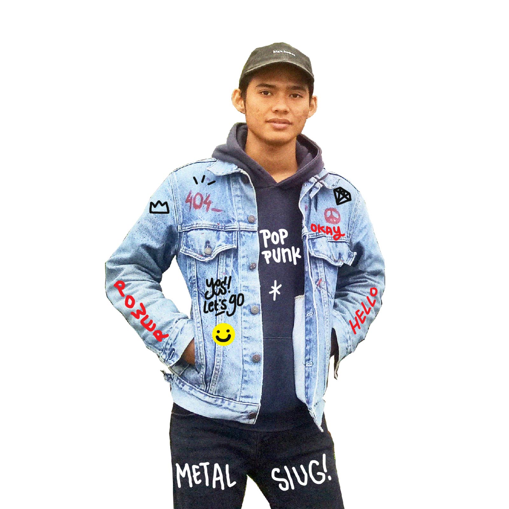

Hai Internet.
Tentangku
Si dominan otak kanan yang suatu hari menjadi seorang yang bekerja di bidang Technology tepatnya dibagian Front end Developer agar menjadi kebanggan keluarga, yang menyukai pemrograman karena untuk bersenang-senang memecahkan masalah dengan bantuan teknologi dan juga membantu menyebarkan kebaikan InsyaAllah bermafaat untuk orang banyak. kadang suka gambar Graffiti, Illustrasi, Design Web dan kadang juga maen Skatebord, dikala jasmani dan rohani kurang banyak gerak.

Detail
| Nama | Salahudin Alayubi |
|---|---|
| TTL | Palembang, 19 Oktober 1996 |
| Alamat | Jalan K.H Azhari Lorong Semeru 1 No. 785, Kota Palembang |